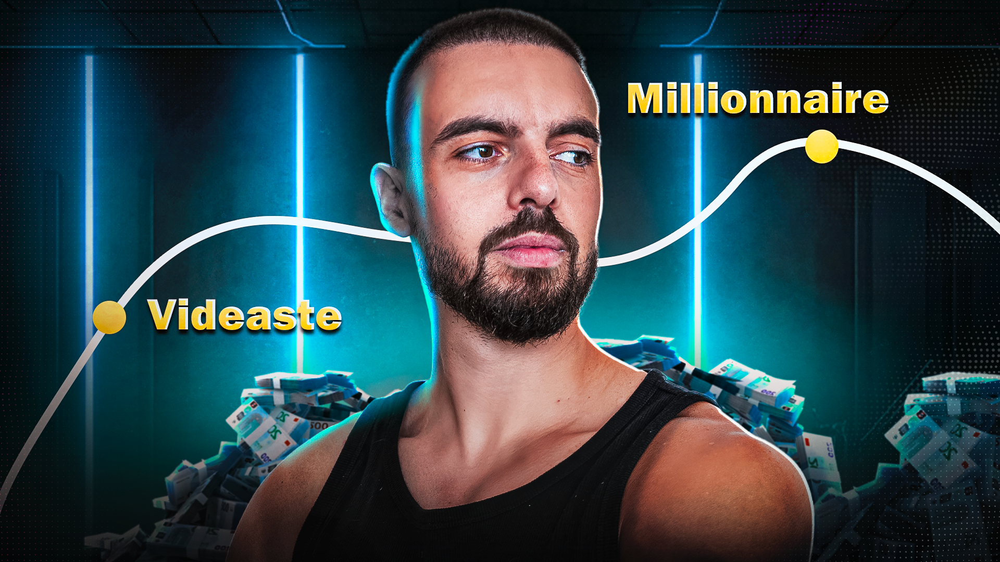

Exemples de Réalisations

Thématique Gaming
Composition dynamique, gestion de la lumière et mise en avant du sujet principal.

Thématique Entrepreneurial
Design épuré, étalonnage des couleurs.
Thématique B2B
Focus sur le produit, clarté de l'information et contraste élevé.
Voir plus
Lien Linktree vers mes reseaux